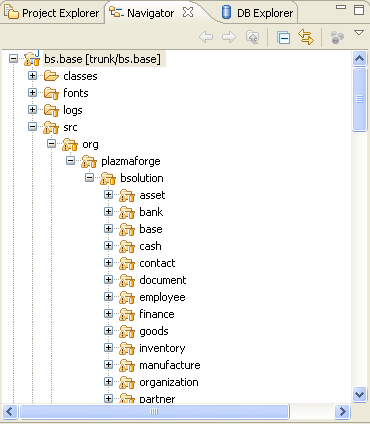
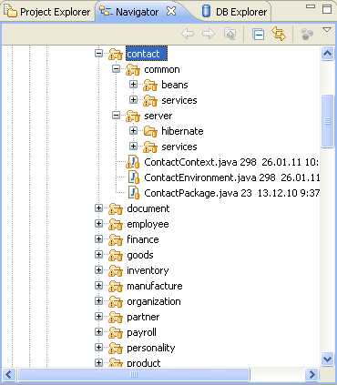

Plazma System состоит из двух частей:
Plazma Framework:
Plazma Business Solution:
Каждый проект представлен соответствующим модулем в SVN. Модуль lib является общим для всех проектов
Полный список проектов/директорий Plazma Workspace (рабочее пространство) следующий:
| Название | Описание | SVN | Java код |
| bs.base | Общая и серверная часть (бины/персистенс объекты, сервисы) | Да | Да |
| bs.base.configuration | Конфигурация системы (.xml, .properties и т.д. файлы) | Да | - |
| bs.base.docs | Документация | Да | - |
| bs.base.db | База данных, SQL скрипты, инициализирующие и тестовые данные | Да | - |
| bs.base.reportstorage | Хранилище отчётов | Да | - |
| bs.base.client.swt | SWT клиентская часть | Да | Да |
| bs.base.client.swing | Swing клиентская часть | Да | Да |
| dist | Директория для дистрибутивных файлов | - | - |
| framework | Framework общий | Да | Да |
| framework.erm | Framework ERM | Да | Да |
| lib | Общие .jar файлы | Да | - |
| framework.client | Framework для создания Client | Да | Да |
| framework.client.swt | Framework для создания SWT Client | Да | Да |
| framework.client.swing | Framework для создания Swing Client | Да | Да |
Проекты: framework, framework.erm, framework.client, framework.client.swt, framework.client.swing, bs.base, bs.base.client.swt, bs.base.client.swing содержат Java код. Эти проекты имеют соответствующие папки:
|  |
Каждый бизнес пакет верхнего уровня имеет одинаковую структуру для своего проекта.
Например для проекта bs.base и пакета contact:
|  |